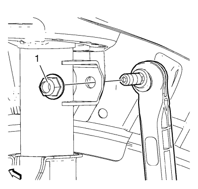
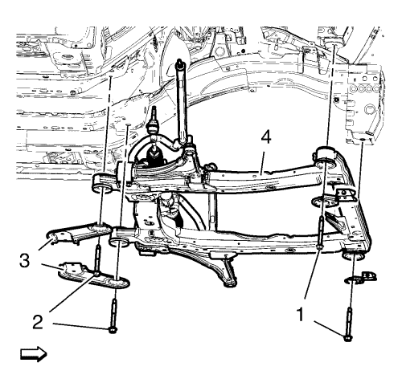

Sustitución del bastidor de la suspensión delantera y del tren de rodaje
Herramientas especiales
| • | CH 904 Bastidor inferior |
| • | CH 49289 Adaptador de centrado |
Si desea informarse sobre herramientas regionales equivalentes, consultar Herramientas especiales .
Procedimiento de desmontaje

- Sostenga el radiador y el condensador desde la parte superior usando las lengüetas situadas a cada lado del condensador.
- Desmonte el perno inferior del árbol intermedio de la dirección (1).
- Levante el vehículo con un elevador. Consultar Elevación del vehículo con un gato .
- Desmonte los conjuntos de neumático y llanta. Consultar Desmontaje y montaje de la rueda y el neumático .
- Desmonte el tubo de escape delantero. Consultar
Sustitución del tubo de escape delantero : 2.0 L diesel LNP → LDE,LLU,LXT,LXV,L2W,2H0 .
- Retirar el protector de salpicaduras del habitáculo frontal. Consultar Sustitución del protector de salpicaduras del habitáculo frontal .

- Desmonte el mazo de cables del sensor de velocidad de la rueda (2) del bastidor en los dos lados.
Desmonte los retenes del mazo de cables (3) del bastidor y el brazo de apoyo inferior.
- Desmonte el mazo de cables (1) del radiador del bastidor.
Desmonte los seguros (4) del mazo de cables del bastidor.
- Desmonte las rótulas inferiores de las manguetas. Consultar Sustitución del brazo de apoyo inferior .

- Desmonte la tuerca (1) de la barra estabilizadora del refuerzo.
- Desmonte las barras de acoplamiento exteriores y las tuercas de las barras de acoplamiento de las manguetas. Consultar Sustitución la barra de acoplamiento exterior del varillaje de la dirección .

- Desmonte los pernos delantero (1) y trasero (2) del soporte del alojamiento del cambio.

- Levante el marco CH 904 y el adaptador CH 49289 con el elevador hidráulico hasta que entren en contacto con el marco.
- Gire las ruedas delanteras hasta la posición recta y asegúrese de que el volante no se mueve.

- Desconecte con cuidado los 2 enchufes del mazo de cables (3) del mecanismo de la dirección con la herramienta adecuada. Siga este procedimiento para desconectar los 2 enchufes del mazo de cables:
| 15.1. | Inserte una pequeña herramienta de punta plana en el soporte del seguro del conector. |
| 15.2. | Mueva cuidadosamente el seguro hacia atrás y tire del conector para desembornarlo. |

Nota: Los pernos de posicionado (2, 3) del adaptador CH-49289 deben acoplarse en los orificios del bastidor del tren de rodaje.
- Compruebe si se requiere alinear las ruedas.
Extraiga los pasadores de posicionado (1) e intente insertarlos en los orificios de los bajos.
Si los pasadores guía no se pueden insertar, se debe seguir Medición de la alineación de las ruedas después de montar el bastidor de la cadena cinemática.
- Afloje el tornillo del soporte del amortiguador del parachoques delantero.
- Asegure el mecanismo de la servodirección al vehículo.

- Quite los pernos delanteros del bastidor (1).
- Quite los pernos traseros del bastidor (2).
- Desmonte los refuerzos (3) del bastidor.
- Desmonte el bastidor (4) del vehículo.
- Desmonte los siguientes componentes si va a sustituir el bastidor:
| • | Los soportes del radiador. |
Procedimiento de montaje
- Monte los siguientes componentes en el tren motriz y el bastidor si se desmontan:
| • | Los soportes del radiador. |
Nota: Los pernos de posicionado (1) del adaptador CH 49289 deben extenderse para guiarlos hasta los orificios de los bajos.
- Extienda los pasadores de posición (1) del adaptador CH 49289 antes de elevar el marco de la suspensión.
- Eleve el bastidor (4) con cuidado, usando el adaptador CH 49289.
- Monte los refuerzos (3) del bastidor.
Precaución: Consulte Precaución con las fijaciones en la sección Prólogo
- Coloque los pernos (2) traseros del bastidor y apriételos a 160 N·m (118 lib. pies).
- Coloque los pernos (1) delanteros del bastidor y apriételos a 160 N·m (118 lib. pies).
- Desmonte el soporte del mecanismo de la servodirección.
- Monte y apriete 2 pernos de soporte del mazo de cables (4) a 9 N·m (80 lib. pulg.).
- Apriete el seguro del mazo de cables (1) en el mecanismo de la dirección.
- Conecte 2 enchufes del mazo de cables (3).
- Monte el perno del soporte del amortiguador del parachoques delantero.
- Monte el perno (1) del alojamiento delantero del cambio y apriételo a 100 N·m (74 lib. pie).
- Monte el perno (2) del soporte del alojamiento trasero del cambio y apriételo a 100 N·m (74 lib. pie).
- Monte las barras de acoplamiento exteriores y las tuercas de las barras de acoplamiento a las manguetas. Consultar Sustitución la barra de acoplamiento exterior del varillaje de la dirección .
- Monte la barra de acoplamiento del varillaje de la dirección. Apriete la tuerca de la barra de acoplamiento del varillaje de la dirección (1) a 35 N·m (26 lib. pie).
- Monte las rótulas inferiores a las manguetas. Consultar Sustitución del brazo de apoyo inferior .
- Monte el mazo de cables del sensor de velocidad de la rueda (2) en el bastidor en los dos lados.
Monte los retenes del mazo de cables (3) en el bastidor y el brazo de apoyo inferior.
- Monte el mazo de cables (1) del radiador al bastidor.
Acople los seguros (4) del mazo de cables al bastidor.
- Monte el tornillo inferior del husillo intermedio de la dirección (1) y apriételo a 34 N·m (25 lib. pie).
- Desmonte el soporte del radiador y del condensador.
- Baje el vehículo en el elevador. Consultar Elevación del vehículo con un gato .
- Instalar los conjuntos de rueda y neumático. Consultar Desmontaje y montaje de la rueda y el neumático .
- Monte el tubo de escape delantero. Consultar
Sustitución del tubo de escape delantero : 2.0 L diesel LNP → LDE,LLU,LXT,LXV,L2W,2H0 .
- Si sustituye el bastidor, compruebe la alineación de las ruedas. Consultar Medición de la alineación de las ruedas .
| © Copyright Chevrolet. All rights reserved |